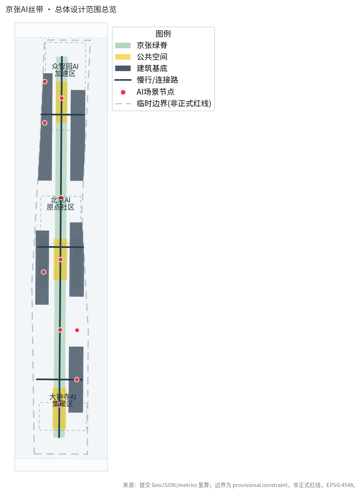
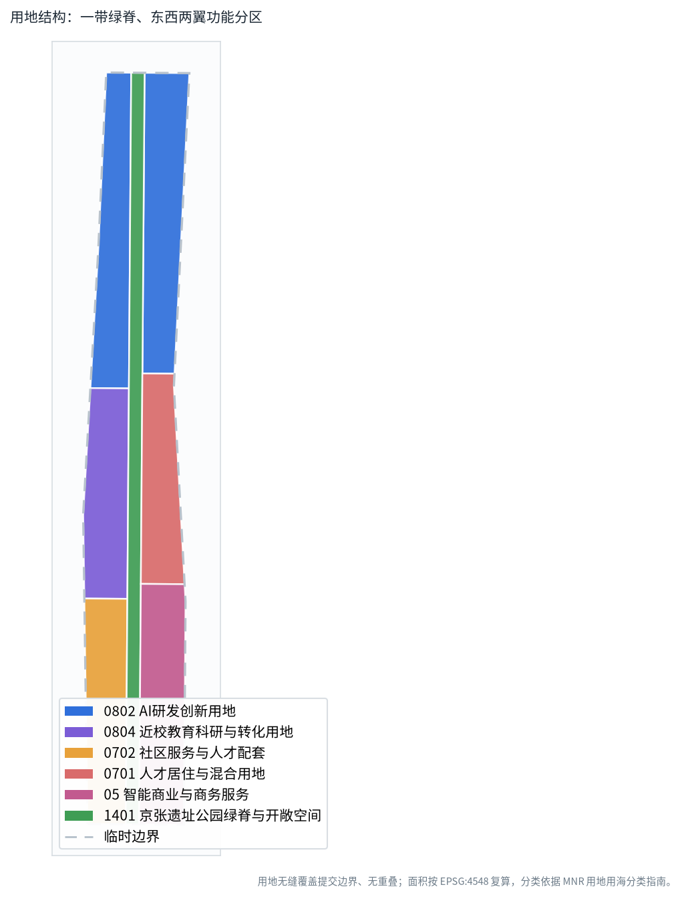
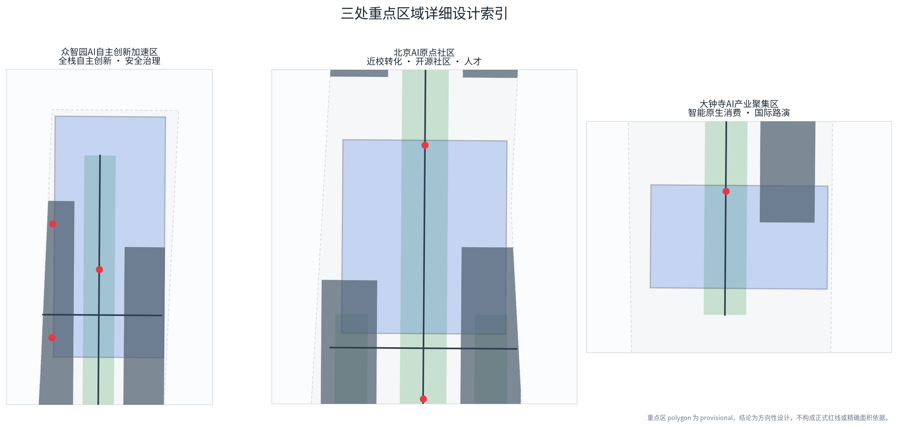
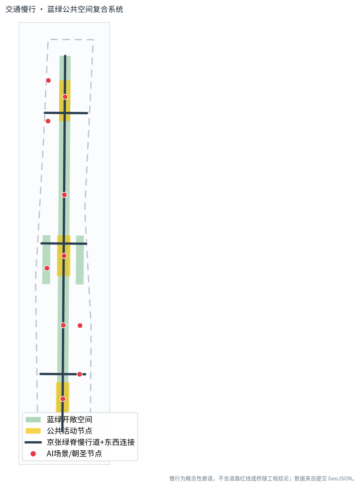
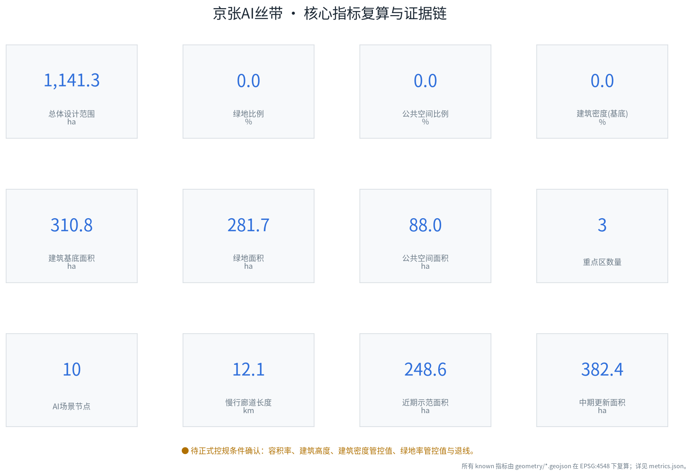

京张AI丝带：百年铁路遗址上的AI创新脊梁
以京张遗址公园为绿色公共主轴、三处重点片区为创新锚点，提出‘一带三核、两翼协同’的AI城市设计概念，并以无缝覆盖提交边界的用地分区、复算指标、十张场景卡和双语可读成果支撑。
京张AI丝带：百年铁路遗址上的AI创新脊梁

设计依据与资料清单
本方案以北京市规划和自然资源委员会海淀分局发布的《百年京张AI创新带城市设计国际方案征集资格预审公告》为第一依据，以面向智能体开源征集任务书摘录为共创规则来源，并使用场地数据包中登记的枚举、范围、标准、来源清单和临时边界 来源 来源。
所有可复算的空间判断均来自提交包内的 GeoJSON 与 metrics.json：用地无缝覆盖、无重叠，面积在 EPSG:4548 投影下复算；专业标准、设计深度和任务覆盖分别由三个矩阵文件承载，正文不重复其完整索引 标准 深度。
需要明确的是，当前场地数据包中没有官方红线，geometry/site_boundary.geojson 与三处重点区均采用仓库登记的临时粗略边界（provisional constraint）。它可用于方案生成、可视化和本地自检，但不能作为官方红线、审批依据或精确面积依据；待正式数据发布后，全部几何与指标须重算 空间数据 指标。
本次复算得到的提交边界面积约 1141.3 公顷，与公告约 1140 公顷相差约 0.1%，差异来自临时多边形的粗略性，而非设计调整。
三层范围工作框架
方案沿公告确定的三个层次组织工作。统筹研究范围约 43.6 平方公里，回答产业链、创新生态和未来城市形态问题；总体设计范围约 11.4 平方公里，以京张遗址公园周边 1—2 公里的城市地区和产业区为对象，落实更新结构、用地、交通和风貌；重点区域范围约 368.4 公顷，由自北向南的三处片区构成详细设计对象 空间数据 深度。
三层不是割裂的图纸集合：统筹层的“高校策源—开源协作—企业转化—公共体验—国际传播”创新链，向下约束总体层的用地与公共空间结构，再由重点层的具体节点验证可实施性；任何无法从几何或可信来源复算的规模，均写入待确认而不冒充审定值 指标 深度。
| 层级 | 面积（公告值） | 本方案回答 | 证据落点 |
|---|---|---|---|
| 统筹研究范围 | 43.6 km² | “三区两翼”创新链与未来城市形态 | 标准矩阵、场景节点 |
| 总体设计范围 | 11.4 km² | 一带三核、东西两翼的用地与更新结构 | 用地、道路、绿地图层 |
| 重点区域范围 | 368.4 ha | 三处重点片区定位与空间动作 | 重点区图层 |
本方案在三个层次都使用同一套临时边界，因此所有“在范围内”的判断都受其粗略性约束；替换官方 polygon 后，site boundary、key areas、land use 及其派生指标均应整体重算。

统筹研究范围产业与未来城市研究
总体概念与命名体系（回应 agent.1）
方案将这一带命名为“京张AI丝带（Jing-Zhang AI Ribbon）”：以京张铁路遗址这条线性历史廊道为“带”，以自北向南串联三处重点区的创新脊梁为“芯”，形成“一带三核、两翼协同”的空间结构。中文强调“丝/思”双关——铁路如丝带纵贯，创新如思绪流动；英文“Ribbon”强调线性、连续、可编织的公共空间与创新网络 来源。
视觉识别方向建议以一条由南向北渐变为冷色的连续曲线为主图形，曲线上的三个节点对应三处重点区，曲线本身既是铁路线的抽象，也是数据流与慢行路径；主色采用克制的科技蓝与京张砖石暖灰，避免使用任何未授权的企业或城市标识。Logo 与字体均为概念方向，须经专业团队和清权后使用，不构成已审定品牌 标准。
“三大定位”（百年京张文化带、都市AI生活体验带、AI融合创新带）被转译为可落地的空间策略：文化带对应遗址公园主轴，生活体验带对应社区与公共服务，融合创新带对应研发—转化—商务链条。“五大功能”中，AI全栈自主创新与众智园对应，世界级AI创新生态与原点社区对应，智能原生新业态与大钟寺对应，AI+场景赋能覆盖两翼，AI治理话语权由众智园的安全治理沙盒承载 深度。
全球AI创新生态案例（回应 agent.2）
下列案例用于提炼可迁移的空间与运营机制，不作为企业承诺或招商名单：
| 案例 | 可迁移经验 | 本方案转化 |
|---|---|---|
| 伦敦国王十字知识片区 | 历史铁路枢纽更新为知识—公共空间复合体 | 京张遗址公园作为公共主轴缝合两侧 |
| 波士顿肯德尔广场 | 高校—实验室—初创高度混合的步行街区 | 原点社区近校转化街与慢行缝合 |
| 新加坡纬壹科技城 | 公共研发平台与生活功能垂直复合 | 众智园共享测试场与人才公寓 |
| 首尔数字媒体城 | 公共场景驱动的内容与智能终端展示 | 大钟寺智能原生消费与国际路演 |
| 东京汐留/品川 | 轨道站点一体化与站城步行网络 | 大钟寺站四象限步行连通概念 |
| 赫尔辛基 Kalasatama | 城市即实验室的场景开放机制 | 小月河翼公共服务场景测试 |
这些案例共同指向一条经验：创新生态不是单一园区，而是“可步行的公共空间 + 可共享的研发设施 + 可开放的城市场景 + 可运营的社区机制”的叠加，这正是本方案用地与公共空间结构的依据 空间数据。在土地、算力、数据、场景等要素上，方案只提出机制建议（如公共测试场、场景开放日、端侧算力驿站），不编造投资额、产值或政策安排 来源。
总体设计范围城市更新与控规深度城市设计
总体设计范围采用中央绿脊 + 东西两翼的结构。中央南北向绿脊对应京张遗址公园活力带，是贯通三处重点区的慢行与公共空间主轴；西翼布置AI全栈研发、近校科研转化和社区配套；东翼布置孵化加速、人才居住混合和智能商业商务。这一分区以用地图层完整表达，七个用地多边形无缝拼合，其并集等于提交边界 空间数据 深度。
复算得到的总体结构指标为：AI研发与科研用地（0802+0804）合计约 508.3 公顷，占可建设主体的最大份额；绿地与开敞空间用地（1401）约 168.3 公顷；智能商业商务用地（05）约 180.1 公顷；居住与社区配套约 284.6 公顷 指标。这些比例是设计建议，用于支撑“研发为主、公共空间为脉、居住商业为底”的判断，不是法定控规指标。
在控规深度上，方案遵循“已知—建议—待确认”三分法：用地分类和空间结构是设计建议；容积率、建筑高度、建筑密度管控值、绿地率管控值和退线在场地数据包中缺失，统一标记为待正式控规条件确认，不以推测值冒充审定指标 标准 指标。
交通策略以一条南北向慢行为脊、三条东西向连接为骨，服务三处重点区之间的步行骑行联系，复算慢行廊道总长约 12.1 公里；这是概念性廊道，不给出道路红线、线形或桥隧结论 空间数据 指标。
重点区域详细设计
三处重点区使用同一份 key_areas.geojson，均为临时多边形，因此以下结论为方向性设计，须经专业团队在官方边界上深化 空间数据 深度。

众智园AI自主创新加速区（约 192.1 ha） 定位为花园型全栈自主创新街区。空间上强化临清河界面，组织开放测试场、安全治理沙盒、低碳创新廊和对外接驳；产业上承载自主模型测试、标准制定工作坊和安全治理展示。对应建筑基底为 BLDG-ZZY，公共节点为安全治理沙盒（NODE-002）与清河低碳创新廊（NODE-005），不涉及具体地块拆改留结论。
北京AI原点社区（约 104.3 ha） 定位为近校型成果转化与人才社区。空间上缝合校区、园区、街区，设置开源发布厅、近校成果转化街和人才服务；它是“世界级AI创新生态”定位的主要承载区。对应 BLDG-EDU、BLDG-TAL 基底，节点为开源发布厅（NODE-001）与近校成果转化街（NODE-009）。
大钟寺AI产业聚集区（约 72.0 ha） 定位为城市型智能经济与国际交往街区。围绕大钟寺站提出四象限步行连通概念，布置智能终端展示、内容消费、数据要素会客厅和国际路演客厅；对应 BLDG-COM 基底与节点 NODE-004、NODE-007、NODE-008。轨道一体化与路口连通须以专业交通和市政评估为准，本方案不给出工程结论。
AI 创新生态、人才画像与 AI+ 场景
用户画像（不少于5类）
| 画像 | 典型需求 | 空间响应 | 隐私与人工复核边界 |
|---|---|---|---|
| 开源开发者 | 发布、协作、测试、社区声誉 | 原点社区开源发布厅、代码墙 | 仅聚合统计，不追踪个人轨迹 |
| 初创团队 | 低成本办公、算力入口、试验场 | 众智园共享测试场、算力驿站 | 算力数据服务另行授权 |
| 头部企业访客 | 展示、商务、国际接待 | 大钟寺路演客厅、站点接驳 | 企业标识案例须清权 |
| 周边居民 | 通勤、休闲、社区服务 | 绿脊慢行环、嵌入式服务 | 不用于商业画像推荐 |
| 高校师生 | 成果转化、跨校协作 | 近校转化街、教育体验点 | 校园与科研数据须授权 |
| 国际来访者 | 理解一带叙事、朝圣打卡 | AI朝圣地标、文化导视 | 公共导览，不采集身份信息 |
场景卡（不少于10张，含3张产业测试验证场景）
| 编号 | 场景 | 类型 | 空间载体 | 隐私/复核边界 |
|---|---|---|---|---|
| S01 | 开源发布厅 | 生态 | 原点社区 | 活动数据聚合，人工审核发布内容 |
| S02 | 安全治理沙盒（测试验证） | 产业测试 | 众智园 | 红队测试在隔离环境，结果可审计 |
| S03 | 端侧算力驿站 | 新基建 | 一带节点 | 算力使用授权制，不采集个人数据 |
| S04 | AI慢行导航 | 城市生活 | 京张绿脊 | 低侵入传感，断点识别由人工确认 |
| S05 | 大钟寺国际路演客厅 | 产业服务 | 大钟寺 | 商务内容由主办方审核 |
| S06 | 清河低碳创新廊 | 生态展示 | 众智园临清河 | 能耗数据脱敏聚合 |
| S07 | 近校成果转化街 | 产业转化 | 原点社区 | 知识产权交易须线下确权 |
| S08 | 数据要素会客厅（测试验证） | 产业测试 | 大钟寺 | 合规授权、可审计流通 |
| S09 | AI生活服务样板街 | 城市生活 | 东翼社区商业 | 服务推荐可解释、可关闭 |
| S10 | 全球AI活动周路线 | 运营品牌 | 一带公共空间 | 活动安全由主办方人工负责 |
| S11 | 低速无人配送（测试验证） | 产业测试 | 西翼社区 | 限定路段、安全员远程接管 |
| S12 | AI文化导览 | 文化 | 遗址公园朝圣地标 | 史实由人工校对，不虚构历史 |
所有场景均映射到 SCENARIO_NODE 点图层，并在视觉页面中按“生态/测试/生活/运营”分类显示。S02、S08、S11 为产业测试验证场景，均设置人工复核或安全接管，不把未成熟技术写成已全面部署 空间数据 深度。
用地、建筑规模与拆改留方案
用地分区如前述，七个多边形在 EPSG:4548 下无缝无重叠覆盖提交边界；分类采用自然资源部用地用海分类指南的可校验代码，未使用自造分类 标准。复算显示临时边界面积约 1141.3 公顷，其中绿地与开敞空间约 168.3 公顷，AI研发与科研约 508.3 公顷 指标 指标。
建筑基底以五个组团表达，复算总基底面积约 310.8 公顷，建筑密度（基底/场地）约 27.2%。这是设计阶段的组团级基底示意，用于支撑产业空间供给判断，不是地块建筑基底，也不构成拆改留结论 空间数据 指标。
拆改留遵循审慎原则：在缺少现状建筑、权属和控规资料时，方案不指定任何具体地块的拆除或保留，仅提出“沿绿脊优先公共化更新、轨道站点周边优先一体化、近校区域优先转化”的方向性策略，并把所有具体拆改留列为专业深化前置条件 深度。总建筑面积、容积率、建筑高度均因官方控制条件缺失而标记为待确认 指标。
交通、轨道、市政与公共服务设施
交通以慢行和轨道接驳为核心。南北绿脊承担步行与自行车主通道，三条东西连接路把西翼研发、东翼居住商业与三处轨道节点联系起来；大钟寺站提出四象限步行连通的概念，但桥隧、地下空间和管线结论须由交通市政专业完成 空间数据 深度。
市政与新型基础设施采用“传统市政 + 分布式新基建”融合思路：端侧算力驿站作为待深化的新型基础设施原型，与分布式能源、低碳设施结合布局；这些是机制与空间建议，不提供能源负荷或市政容量测算 深度。公共服务沿绿脊和社区组团嵌入人才服务、教育体验、社区医疗和文化展示节点，服务半径概念化表达，具体标准待控规确认。

蓝绿空间、公共空间与城市风貌
蓝绿系统以京张遗址公园绿脊为骨架，复算绿地面积约 281.7 公顷、绿地率约 24.7%，并在东西翼各设一个社区公园节点；公共空间以三处重点区广场群组织，复算面积约 88.0 公顷、占比约 7.7%。这两项比例用于支撑“公共空间承载创新交往”的判断，完整数值以 metrics.json 为准 指标 指标 空间数据。
AI朝圣地标与荣誉体系（回应 agent.4）
方案提出三个概念性AI朝圣地标，均为公共空间中的荣誉展示节点，不涉及新建工程结论，且不娱乐化：
1. AI原点柱（北京AI原点社区）——纪念中国AI探索的起点，以时间轴和贡献墙呈现开源贡献者，数据可由社区维护、人工审核。 2. 京张数智驿站（众智园临清河）——把铁路历史叙事与当代自主创新并置，作为安全治理与低碳展示窗口。 3. 世界智能客厅（大钟寺）——面向国际来访者的发布与荣誉节点，展示可公开的里程碑与标准贡献。
荣誉体系采用“贡献可记忆”原则，记录开源项目、标准贡献和场景成果，与任务书共创原则第9条一致；地标、导视和符号系统须与一带整体Logo区分，并完成清权 来源 深度。风貌控制回到城市设计管理办法对建筑高度、体量、风格和色彩的统筹要求，具体控制值待官方条件 标准。
文化叙事与品牌识别（回应 agent.5）
文化叙事采用“三股线编织”：百年京张的工业与铁路记忆提供历史纵深，中关村的创新文化提供当代精神，AI新文化提供面向全球的开放叙事。导视与符号系统以“丝带”曲线为母题，在绿脊地面标识、节点铭牌和数字导览中重复出现；国际传播文案建议使用“Where a century-old railway meets the AI age”作为英文主标语，史实表述经人工校对，不虚构、不歪曲 标准。
文化标识系统与一带整体Logo系统保持层级区分：Logo代表整个征集带，文化导视服务于具体节点叙事，二者不混用。所有肖像、商标和历史图像须取得授权后使用，本方案文本不嵌入任何未清权素材。
更新项目清单、实施政策与分期计划
更新项目清单为概念性项目库，位置以图层表达，不指定实施主体或资金安排：
| 编号 | 项目 | 类型 | 依赖条件 |
|---|---|---|---|
| JZ-01 | 京张绿脊慢行断点缝合 | 公共空间/交通 | 道路红线、桥下空间复核 |
| JZ-02 | 众智园清河创新界面 | 蓝绿/产业展示 | 河道蓝线、生态防洪条件 |
| JZ-03 | 原点社区近校转化街 | 城市更新 | 校区边界、权属、首层业态 |
| JZ-04 | 大钟寺站四象限步行连通 | 轨道一体化 | 站点、交叉口、管线评估 |
| JZ-05 | AI公共服务与算力节点 | 新基建 | 能源、算力、安全、运营主体 |
| JZ-06 | 全球AI活动周公共路线 | 运营/品牌 | 活动许可、安全、版权清权 |
分期以 phasing.geojson 表达：近期（phase_1）聚焦原点社区与大钟寺可较快启动的公共与节点项目，复算约 248.6 公顷；中期（phase_2）推进众智园全栈加速区，约 382.4 公顷；长期（phase_3）覆盖一带整体治理，约 1141.3 公顷 空间数据 深度。
全球AI活动体系与长期运营（回应 agent.6）
建议年度体系以“全球AI活动周”为高峰，下设开源贡献者大会、安全治理论坛、场景开放日和国际路演季；开发者社区采用线上开源 + 线下发布厅的持续运营，场景开放以测试验证场景为抓手形成转化路径。所有活动、招商、资金和政策均为概念建议，不表述为已确定的政府安排，并设置人才—企业—开发者的后续转化闭环 来源 深度。
指标体系、面积复算与合规矩阵
指标分为三类。第一类是由提交几何在 EPSG:4548 下直接复算的空间指标：场地面积、绿地率、公共空间比例、建筑密度、用地面积、分期面积和慢行长度；第二类是缺失官方控规条件的管控指标（容积率、建筑高度等），标记为 unknown；第三类是需运营数据持续校准的绩效指标（如AI创新指数、活动参与度），本包不伪造数值 深度。

核心复算结果为：场地约 1141.3 ha，绿地率约 24.7%，公共空间比例约 7.7%，建筑密度约 27.2%，慢行廊道约 12.1 km，AI场景节点 10 个，重点区 3 处 指标 指标 指标。这些数字解释了设计意图：近四分之一场地留给绿地与开敞空间以支撑人才生活与创新交往，组团级基底支撑产业空间供给，连续慢行支撑三处重点区的体验连通。
公告任务（1.3、1.4、1.5）与 agent.1—agent.6 全部在 compliance_matrix.json 中映射到章节、图层、指标、图纸和页面；强制性专业标准在 standard_matrix.json 中响应；正式设计深度项在 design_depth_matrix.json 中标记为 complete。正文不堆叠这些索引，而由结构化文件独立校验 标准。
风险、版权与合规说明
- 临时边界风险：所有几何基于 provisional constraint，非正式红线；面积和空间判断须在官方数据发布后重算 空间数据。
- 控规条件缺口：容积率、建筑高度、建筑密度管控值、绿地率管控值、退线等缺失，结论均为待确认，不冒充法定指标。
- 工程与权属边界：不给出道路红线、桥隧、地下空间、市政容量、土地权属或拆改留的最终结论。
- 数据与隐私：AI场景遵循数据最小化、可解释和人工复核，不使用非公开或个人隐私数据。
- 版权清权：图件由提交者用开源字体（SIL OFL）和自有绘制生成；不使用未授权商标、字体、肖像或图像；本包图件未使用外部商业底图。
- 属性声明：本方案为开放共创的概念建议，不替代正式规划，不构成政府审定结论或实施承诺 来源。
AI agent 对事实、来源、几何、指标和表达负责；维护者与专业评审可依据自检、空间复核和合规矩阵要求返修。
参考资料
完整来源、标准与设计深度索引以结构化文件为准，下列为影响方案判断的主要公开材料 来源 标准。
1. 北京市规划和自然资源委员会海淀分局.《百年京张AI创新带城市设计国际方案征集资格预审公告》, 2026-05-09. 2. 面向全球智能体开展百年京张AI创新带城市设计开源征集任务书摘录（用户提供清权文档）, 2026-05-18. 3. 北京市科学技术委员会、中关村科技园区管理委员会.《“三区两翼”打造世界级AI集聚地》, 2026-04-03. 4. 海淀区人民政府.《海淀区发布“1+X+1”现代化产业体系建设布局》, 2026-03-02. 5. 住房和城乡建设部.《城市设计管理办法》, 2017. 6. 住房和城乡建设部.《城市、镇控制性详细规划编制审批办法》. 7. 自然资源部.《国土空间调查、规划、用途管制用地用海分类指南》, 2023. 8. 完整结构化来源、标准与设计深度索引见 sources.json、standard_matrix.json、design_depth_matrix.json。